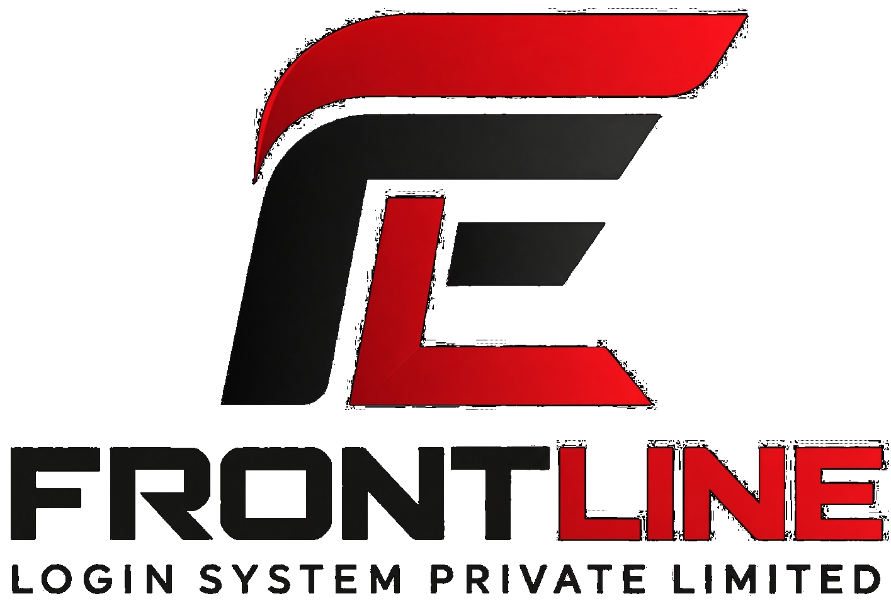

Custom CRM
Business-focused CRM solutions designed around workflows, customer relationships and operational requirements.

ESTABLISHED 2000 · IT SERVICES & CONSULTING
Frontline Login System Private Limited delivers technology solutions across software, cloud, cybersecurity, data and digital operations.
Engineering practical solutions for evolving technology needs.
FRONTLINE LOGIN SYSTEM
Frontline Login System Private Limited is an Indian IT services and technology company incorporated in 2000. Its public technology footprint spans software and application services, cloud solutions, cybersecurity, data analytics, CRM, IoT and technology consulting.
The company’s approach is centered on understanding business requirements and delivering tailored technology solutions rather than a one-size-fits-all model.
CAPABILITIES
Business-focused CRM solutions designed around workflows, customer relationships and operational requirements.
Assessment, planning and migration support for organizations moving workloads and applications to cloud environments.
Security-focused services covering risk, protection, monitoring and resilience for digital environments.
Data-driven solutions designed to turn operational information into useful business insights.
Connected technology and asset-tracking concepts for visibility, monitoring and operational efficiency.
Testing support for application quality, reliability, performance and release readiness.
TECHNOLOGY ECOSYSTEM
Technologies publicly associated with Frontline’s online footprint include:
Start with the business requirement, technical environment and desired outcome.
Shape a practical solution around the organization's priorities and constraints.
Implement, test and refine technology with attention to reliability and usability.
Continue improving the solution as business and technology requirements evolve.
CAREERS
Explore opportunities with Frontline Login System and follow the company's official LinkedIn presence for job openings and updates.
LET'S CONNECT
Contact details below are based on the company's publicly indexed legacy website and should be reconfirmed with the company before launch.
1st Floor, 264–265, Dr Annie Besant Rd, Municipal Colony, Worli Shivaji Nagar, Worli, Mumbai, Maharashtra 400025